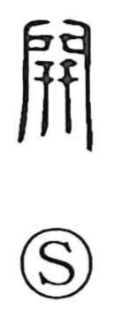

開

Uncategorized
Kun: hiraku, hirakeru, aku, akeru | On: kai
open ・ to open
Explanation
A compound graph that sets the door-bolt 閂 together with 廾, the figure of two hands placed side by side. 閂 depicts the vertical locking bar used to secure the doors of a gate; adding the two hands beneath shows the bar being lifted away with both hands to open the doors. From this image the character comes to mean simply “to open,” extending from gates to opening things in general.